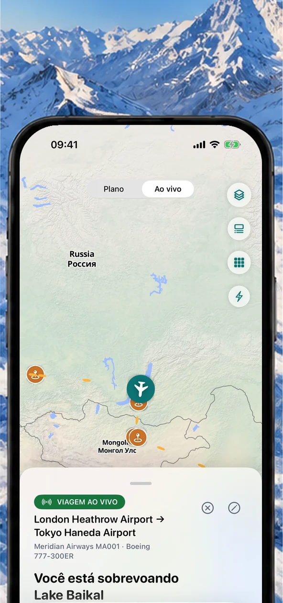
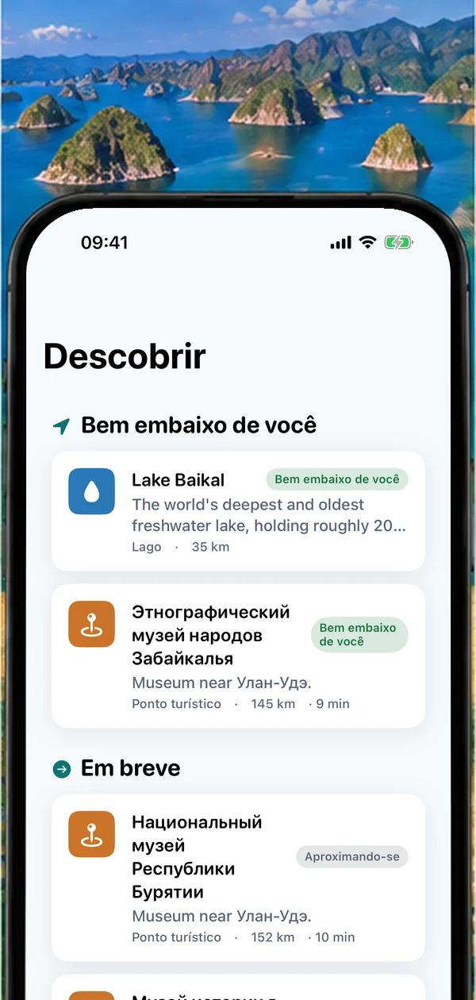
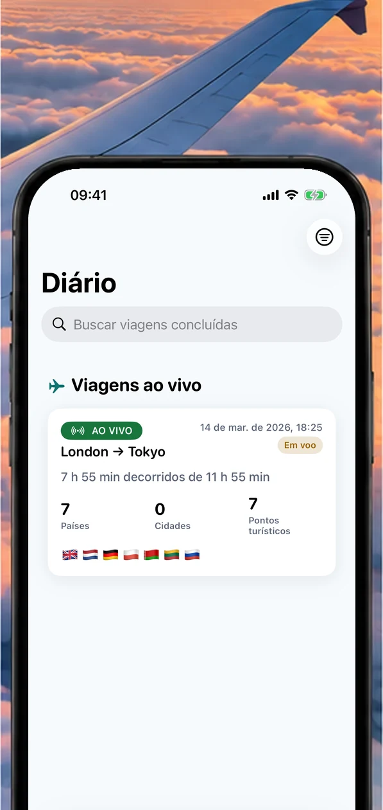
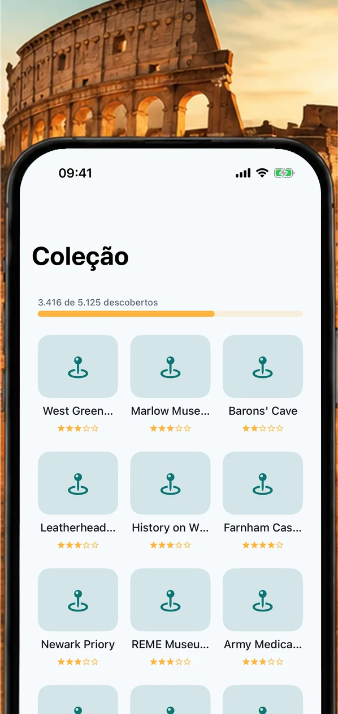
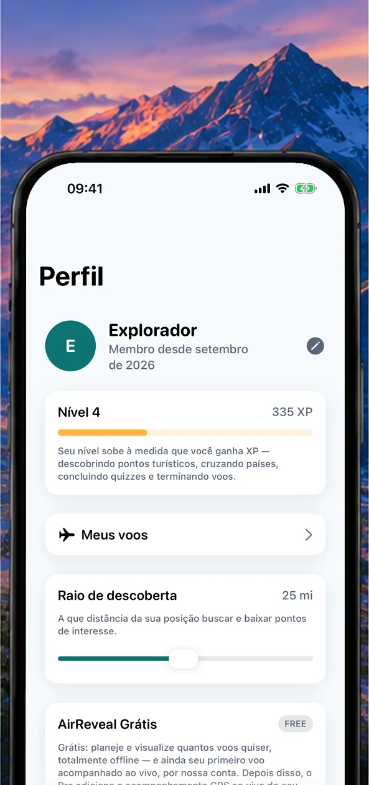
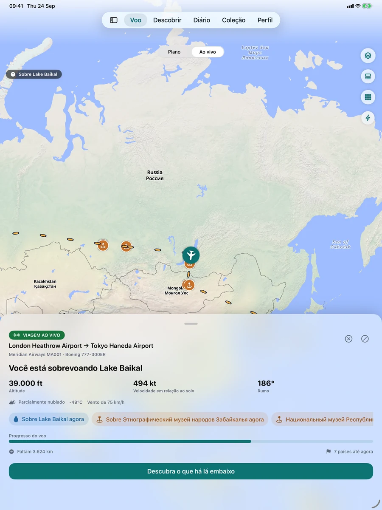
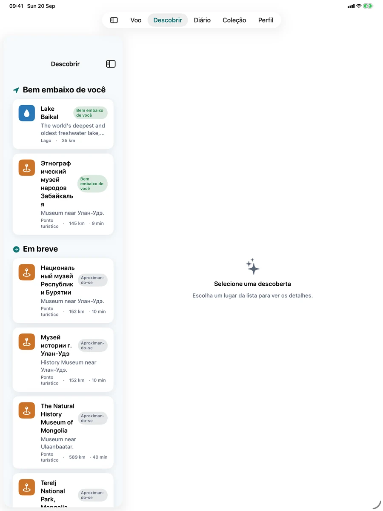

Veja onde você está
Acompanhamento de voo ao vivo, mapas lindos e vistas de tirar o fôlego — até offline.

Veja o que você está sobrevoando, descubra os pontos turísticos sob o seu avião, guarde cada viagem no seu diário de voo e monte uma coleção pessoal do mundo, pensada para os momentos em que você está realmente no ar.
O AirReveal reúne contexto de voo, descoberta geográfica, diário e coleção em uma experiência tranquila, pensada para quem viaja.
Acompanhamento de voo ao vivo, mapas lindos e vistas de tirar o fôlego — até offline.

Pontos turísticos fascinantes, cidades e maravilhas naturais em tempo real.

Reviva suas viagens e colecione os lugares que as tornaram especiais.

Transforme suas viagens em um mapa pessoal do mundo.

Ganhe conquistas, acompanhe seu progresso, guarde seu passaporte e faça cada voo valer a pena.

Uma experiência responsiva pensada para o dispositivo que você tem nas mãos, de uma olhada rápida no iPhone a um amplo mapa de voo no iPad.


Todo assento na janela faz a mesma pergunta. O AirReveal responde: sua posição ao vivo no mapa, os pontos turísticos, cidades e maravilhas naturais sob e à frente do seu avião, e o que vem a seguir.
Lugares reais ao longo da sua rota, nomeados à medida que você passa por cima deles, usando o GPS do seu dispositivo.
Saiba se um lugar, ou o sol da hora dourada, está à esquerda ou à direita para escolher a janela certa.
Um mapa de voo offline que precisa só do GPS. Baixe o conteúdo do seu voo antes da partida e pronto.
Salve cada voo, colecione os lugares que viu e carimbe o seu passaporte de países.
Abra o AirReveal: ele usa o GPS do seu dispositivo para posicionar você no mapa e nomear os pontos turísticos, cidades, litorais e maravilhas naturais sob e à frente do seu avião, em tempo real.
Sim. O acompanhamento ao vivo usa o GPS do seu dispositivo, que não precisa de Wi-Fi a bordo nem de sinal de celular. Baixe o conteúdo offline de um voo antes da partida para deixar mapas e lugares prontos para a viagem.
O AirReveal diz se um lugar, ou o sol na hora dourada, está à esquerda ou à direita da aeronave, para você saber por qual janela olhar.
Não. O AirReveal é um companheiro pessoal para a viagem em si. Não é um serviço oficial de status de voo, tráfego aéreo ou segurança da aviação, então consulte sua companhia aérea e o aeroporto para portões, atrasos e orientações da tripulação.
Sim. Salve cada voo no seu diário, colecione os lugares que descobrir, carimbe o seu passaporte de países e acompanhe seu progresso com conquistas.
Você pode planejar e visualizar voos e acompanhar ao vivo o seu primeiro voo de graça. O AirReveal Pro libera o acompanhamento GPS ao vivo contínuo e toda a experiência em voo.
Planeje e visualize voos e explore a experiência antes de decolar.
Libere o acompanhamento GPS ao vivo contínuo e toda a experiência em voo.
Os preços aparecem na sua moeda na App Store.
O AirReveal chega em breve à App Store para iPhone e iPad.